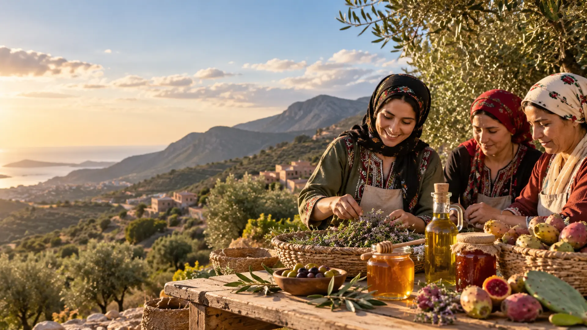

Thimdrine
Thimdrine

2015
Where it all began
A small group of women came together to create natural products inspired by local traditions.
- Founded the cooperative
- Created our first handmade products
- Started using local ingredients